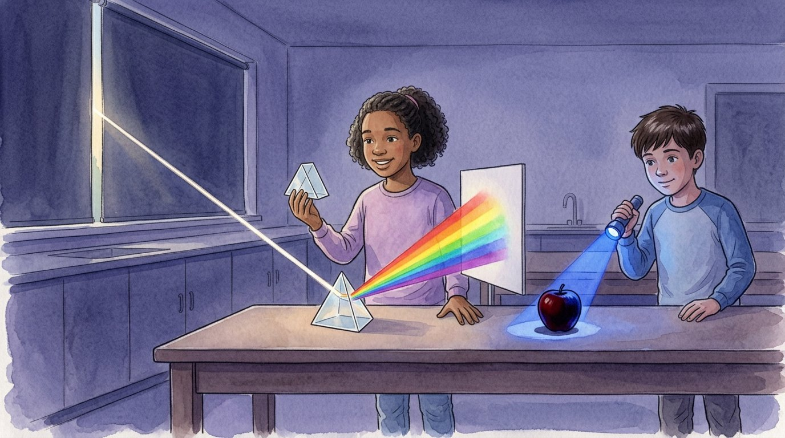

Grade 8 · Science · MS-PS4-2
The rainbow hiding in a sunbeam
A story about a young Isaac Newton in a dark room, a second prism that changed everything, and why a red apple looks black under blue light.
El arcoíris escondido en un rayo de sol. Un cuento sobre un joven Isaac Newton en un cuarto oscuro, un segundo prisma que lo cambió todo y por qué una manzana roja se ve negra bajo una luz azul.
Science words you will learn
Tap a green word to see what it means.
Toca una palabra verde para ver qué significa. Con la ayuda activada, verás también la definición en español.
The story
El cuento está en inglés. Pulsa «Listen to the story» para escucharlo y toca las palabras verdes cuando no entiendas una.
Mr. Mensah closed the blinds until only a thin sunbeam came through a gap. "In 1665, a terrible plague closed Cambridge University in England," he said, "and a young student named Isaac Newton went home to his family's farm. Around 1666, he darkened a room, let a beam of sunlight in through a small hole, and put a glass in its path."
He held up a prism. The sunbeam went in white and came out the other side as a band of colors on the white screen. Selena read them out loud. "Red, orange, yellow, green, blue, violet!" White light had separated into a band of colors, which Newton called a .
"People in Newton's time thought the glass added the colors to the light," said Mr. Mensah. "So Newton tried something clever." He let only the red part of the band pass through a hole in a card and into a second prism. The red light came out of the second prism still red. "The prism doesn't make the colors," said Mr. Mensah. "The colors were already inside white light. The prism only separates them."
"But why does a prism separate them?" asked Elías. "Glass light: it lets it pass through. But when light goes from air into glass, it bends, and that bending is called ," said Mr. Mensah. "Each color bends a slightly different amount, so the colors spread apart."
Then he turned on the lights and put a red apple on the table. Daniel shone a blue flashlight on it, and the apple looked almost black. "A red apple red light and the other colors," said Mr. Mensah. "Under blue light, there's no red light to reflect, so it looks dark."
Salma thought about it. "So that's why my black T-shirt gets so hot in the sun?" "Exactly," said Mr. Mensah. "A black shirt absorbs almost all the colors, and the energy of the absorbed light becomes heat. A white shirt reflects most of the light, so it stays cooler."
"Newton wrote about his experiments in a letter to the Royal Society in London in 1672," Mr. Mensah said. "Some scientists argued with him for years. But the second prism was hard to argue with."
As the class left, the sun came out from behind a cloud, and the prism on the windowsill threw a tiny rainbow on the wall. Sophia wrote in her notebook: White light isn't one color. It's all of them, waiting to be separated.
Glossary
- prism
- A clear block of glass with flat sides that bends light and can separate it into colors.
- prisma: Un bloque de vidrio transparente con caras planas que desvía la luz y puede separarla en colores.
- spectrum
- The band of colors that makes up white light: red, orange, yellow, green, blue and violet.
- espectro: La banda de colores que forma la luz blanca: rojo, naranja, amarillo, verde, azul y violeta.
- transmit
- To let light or another wave pass through. Glass and clear water transmit light.
- transmitir: Dejar pasar la luz u otra onda. El vidrio y el agua clara transmiten la luz.
- refraction
- The bending of light when it passes from one material into another, like from air into glass.
- refracción: El cambio de dirección de la luz cuando pasa de un material a otro, por ejemplo del aire al vidrio.
- reflect
- To bounce light or another wave back from a surface.
- reflejar: Hacer rebotar la luz u otra onda en una superficie.
- absorb
- To take in light or another wave. The energy of absorbed light often becomes heat.
- absorber: Recibir y quedarse con la luz u otra onda. La energía de la luz absorbida a menudo se convierte en calor.
Questions
Choose the correct answer. If you make a mistake, the story shows you where the answer is.
Elige la respuesta correcta. Si te equivocas, el cuento te muestra dónde está la respuesta.
-
Question A. What happened when sunlight passed through the prism?
¿Qué pasó cuando la luz del sol atravesó el prisma?
White light came out as a spectrum: red, orange, yellow, green, blue and violet.
-
Question B. What did Newton's second prism show?
¿Qué mostró el segundo prisma de Newton?
The red light came out still red, so the prism doesn't make colors; it separates the colors already in white light.
-
Question C. Why does a prism separate the colors?
¿Por qué un prisma separa los colores?
Light bends when it passes from air into glass (refraction), and each color bends a slightly different amount.
-
Question D. Why did the red apple look almost black under blue light?
¿Por qué la manzana roja se veía casi negra bajo la luz azul?
A red apple reflects red light and absorbs the others. Blue light has no red to reflect, so the apple looks dark.
-
Question E. Why does a black T-shirt get hotter in the sun than a white one?
¿Por qué una camiseta negra se calienta más al sol que una blanca?
A black shirt absorbs almost all the colors, and the absorbed light energy becomes heat.
Challenge: explain your thinking
Use a model
Draw a model with three arrows to show what happens to light when it hits a window, a mirror and a black notebook. Label each arrow: reflected, absorbed or transmitted. Then explain your model.
Usa un modelo. Dibuja un modelo con tres flechas para mostrar qué le pasa a la luz cuando llega a una ventana, a un espejo y a un cuaderno negro. Rotula cada flecha: reflejada, absorbida o transmitida. Después explica tu modelo.
Answer in your notebook or talk it over with a classmate. Use evidence from the story.
Responde en tu cuaderno o coméntalo con un compañero. Usa evidencia del cuento.
Check your thinking
Window: most of the light is transmitted; the arrow goes straight through the glass (and bends a little as it enters and leaves). Mirror: the light is reflected; the arrow bounces back. Black notebook: the light is absorbed; the arrow stops at the surface, and the notebook warms up. Most materials do a little of all three, but one usually wins.